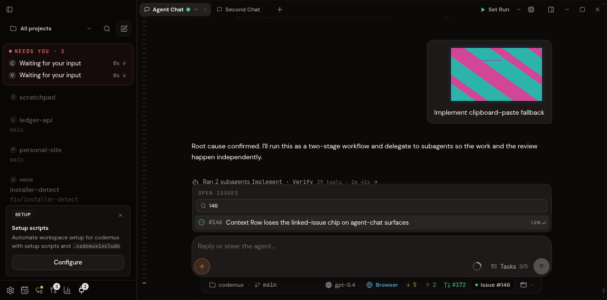
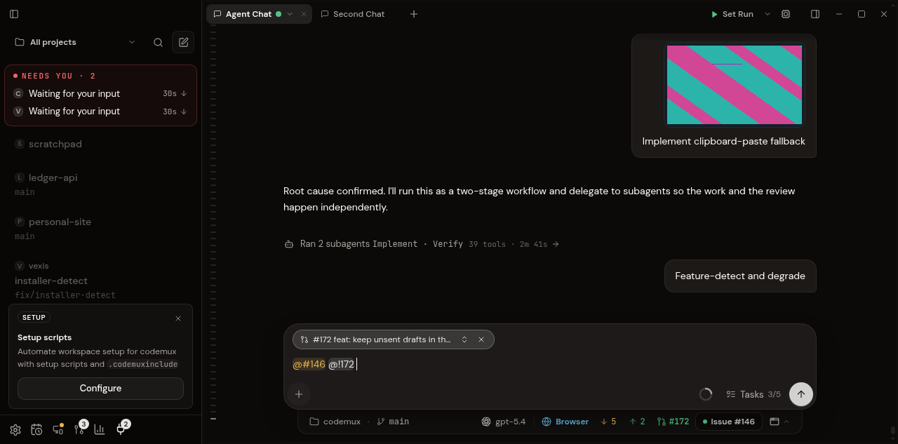
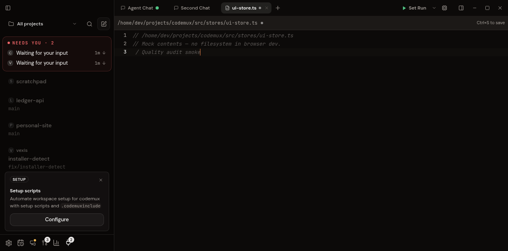

Codemux · local code audit · 17 October 2026
Fixed file-preservation bugs and async races, reduced copying, and removed proven unused code.
Remote terminal buffer append time
128 MiB appended to a full 1 MiB buffer. Median of five runs; lower is faster.
180.221 ms → 1.433 ms · about 126× faster for this operation
What changed
- Editing
- File switches, saves, and remounts preserve the current buffer and its newer unsaved edits.
- Search and state
- Obsolete searches and listeners cannot overwrite newer state. MCP and preset hydration keep live updates.
- Files and Git
- NUL-delimited filename records preserve unusual valid-UTF-8 names in Git; worktree copying also preserves raw Unix path bytes. Generated workspace paths reject navigation components.
- Terminal lifetime
- Owned children are terminated and reaped. Replay and serializer ownership prevent duplicate output and missed history saves.
- Remote streams
- Shutdown settles requests; reconnects remain retryable. Mixed SSE newline records and strict HTTP framing preserve message boundaries, including valid bodyless HTTP responses.
- Efficiency
- Shared snapshots avoid full index/file-list copies. Concurrent folder lookups share one scan. Filesystem work leaves the async executor; unchanged state avoids replacement containers.
- Dead code
- Removed seven unused modules (848 lines), one runtime dependency, obsolete helpers, redundant folder lookups, and unused capability state.
Verification
| Check | Observed result |
|---|---|
| Frontend regression and consumer tests | 415 passed · 27 files |
| Native Rust tests | 203 passed · 1 existing ignored test |
| Claude and managed workflow sidecars | 139 passed |
| Hermes adapter | 13 passed |
| Node 22 remote-client consumer checks | 198 passed · 20 files (overlaps frontend coverage) |
| Independent review | Claude Opus 5.5 · high · three rounds; no remaining in-scope blockers |
| Type checks and production build | TypeScript, Rust, and both sidecars passed; production build passed |
| Browser flows with mock data | Issue/PR search and selection; editor edit → save → reopen passed |
Regressions were reproduced before fixes; existing neighboring behavior was tested too. Repository-wide validation remains with CI, following project instructions.
Inspect browser evidence



Review scope and limits
Reviewed startup and event lifecycles, editor/disk operations, Git/worktree paths, terminal replay and process ownership, indexing and file selection, HTTP/SSE/WebSocket lifecycles, and provider sidecars.
- Validation ran locally on Linux. Windows/macOS, live paid providers, SSH, relay transports, and release packaging were not exercised.
- Browser checks used seeded mock data. Missing mock responses for delegation, issue lookup, and editor tabs were corrected so those flows could be exercised.
- Slow-client queue growth and inactive rate-limit entry retention remain unmeasured hardening candidates. No claim is made that every possible defect has been eliminated.